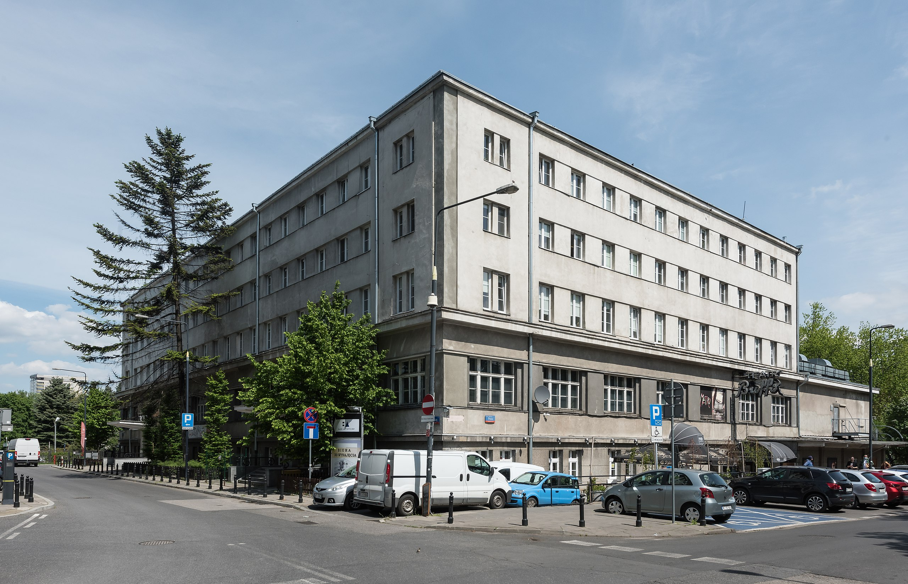

Główna Kwatera ZHP kieruje działalnością ZHP, a w szczególności:
tworzy warunki do realizacji strategii rozwoju ZHP, a harcerskie komendy są oceniane z jej realizacji;
wykonuje zadania określone w Statucie ZHP, uchwałach Zjazdu ZHP i Rady Naczelnej ZHP;
przyjmuje plan pracy Głównej Kwatery ZHP i plan kształcenia ZHP na dany rok kalendarzowy;
przedkłada Radzie Naczelnej ZHP projekty uchwał;
podejmuje uchwały o nabywaniu, zbywaniu i obciążaniu majątku nieruchomego ZHP, niebędącego majątkiem chorągwi;
wydaje zgodę na zbycie lub obciążenie majątku nieruchomego chorągwi, podejmuje uchwały o objęciu akcji lub udziałów w spółce prawa handlowego z udziałem ZHP lub ustanowieniu fundacji jako fundator;
deleguje przedstawicieli do reprezentowania Związku w innych podmiotach gospodarczych, w których ZHP ma udziały, oraz w fundacjach;
powołuje i likwiduje centralne jednostki organizacyjne Związku;
powołuje i odwołuje kierowników jednostek organizacyjnych i gospodarczych utworzonych przez Główną Kwaterę ZHP;
uchwala regulaminy wewnętrzne i instrukcje ZHP, niezastrzeżone dla innych władz ZHP;
wspomaga, koordynuje i nadzoruje pracę komendantów i komend chorągwi, centralnych jednostek organizacyjnych i gospodarczych ZHP oraz ocenia ich działalność;
koordynuje działalność ruchu przyjaciół harcerstwa;
powołuje i odwołuje ciała doradcze – rady, komisje i celowe zespoły robocze, nadaje odznaczenia i tytuły honorowe ZHP niezastrzeżone dla innych władz ZHP.
Skład Głównej Kwatery ZHP:
hm. Martyna Kowacka — Naczelniczka ZHP
hm. Katarzyna Brzyska — Skarbniczka ZHP
hm. Agata Erhardt-Wojciechowska — zastępczyni naczelniczki ZHP ds. pracy z kadrą i kultury organizacji
hm. Anna Pospieszna — zastępczyni naczelniczki ZHP ds. wsparcia metodyczno-programowego
hm. Bartosz Bednarczyk — zastępca naczelniczki ZHP ds. relacji zewnętrznych
hm. Dominika Brożek — członkini GK ds. kształcenia
hm. Piotr Jaworski — członek GK ds. organizacyjnych
phm. Dawid Schwann — członek GK ds. majątku i gospodarki

Budynek YMCA przy ul. Marii Konopnickiej 6 w Warszawie, siedziba władz naczelnych ZHP
 Główna Kwatera ZHP kieruje działalnością ZHP, a w szczególności:
Główna Kwatera ZHP kieruje działalnością ZHP, a w szczególności: